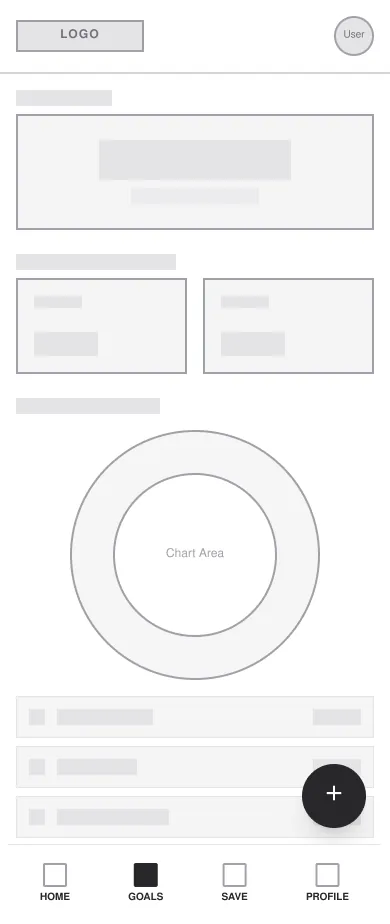
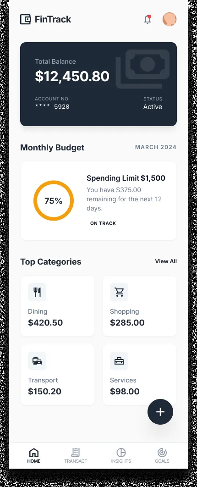
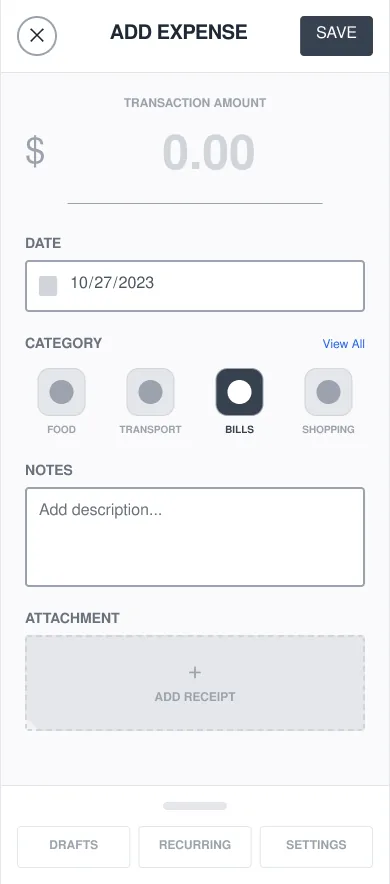
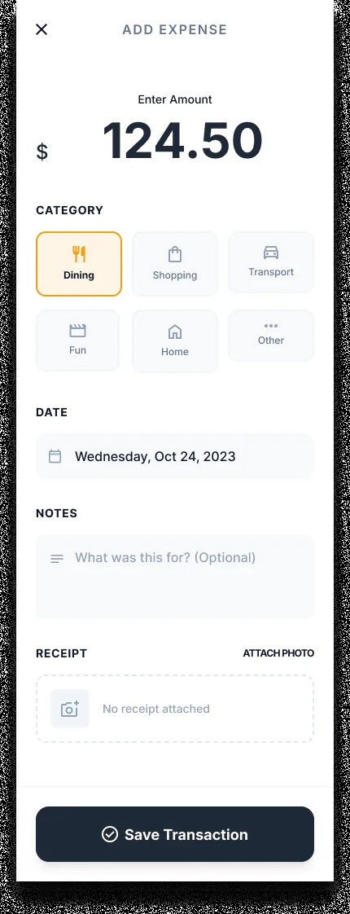
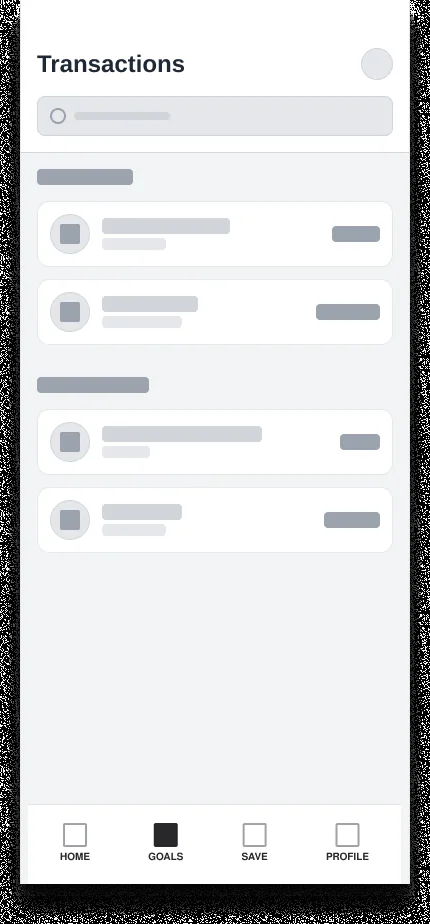
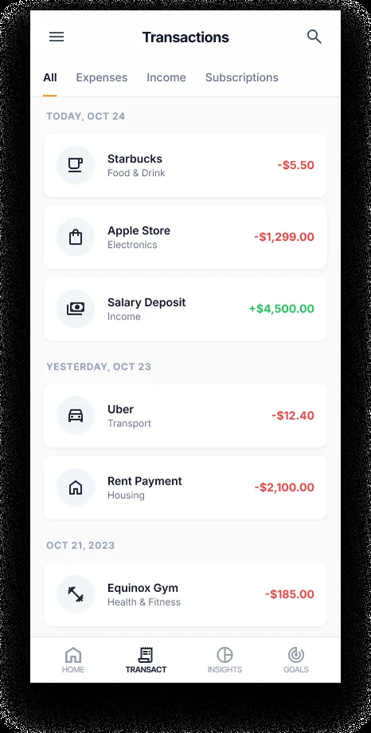
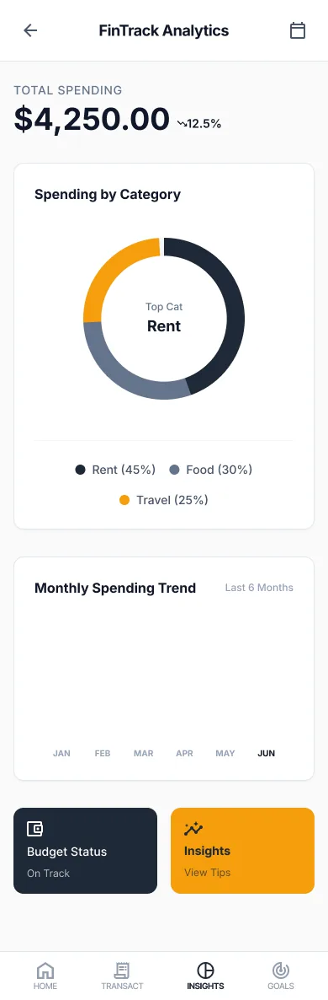
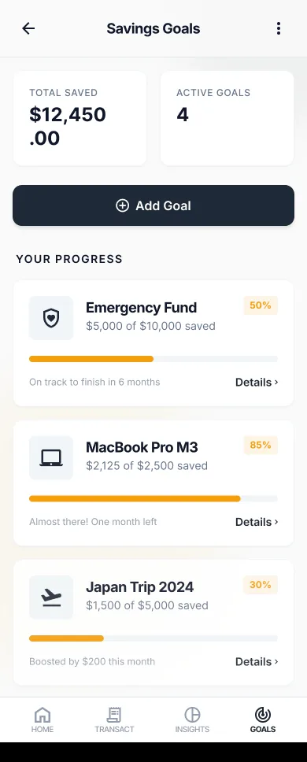

FinTrack — Personal Finance & Expense Flow
& Behavioral Budgeting Concept
A Figma prototype that redesigns expense logging as a 2-tap flow (amount, then a suggested category), with gentle overspend nudges and a month-end balance curve. It is built to test whether fewer taps make daily logging stick.
The design starts from one assumption: logging stops when it asks too much (multi-step forms, alarm-style alerts on small overspends, analytics that hide the one number you need today). The prototype is built to test that, not to prove it.
Designed a two-tap expense flow (amount, then one of four suggested categories), neutral feedback on overspends, a daily safe-to-spend number and a month-end balance curve, all built from Figma components and design tokens.

# FinTrack 2-tap expense flow, as designed (a Figma prototype: nothing below is computed) [INPUT] Amount ──> 4 suggested categories, one tap to pick [BUDGET] Screens designed around one number: ├─ Safe-to-spend today (monthly budget minus recurring fixed costs) ├─ Overspend nudge when a day runs well above the usual pace └─ Month-end balance curve [TONE] Neutral feedback on overspend: no red alarms or shaming copy [PROTOTYPE] Figma flow built from Auto Layout components & design tokens
The Intimidation of Modern Budgeting
My working assumption is that people starting their first jobs give up on budgeting apps because logging an expense means category dropdowns, mental arithmetic and dense tables. FinTrack is designed to test that assumption, not to report it.
The FinTrack screens use visual proportion instead of tables of numbers: colour-coded budget rings, a two-tap expense flow and category breakdowns.
Key Usability Friction Factors
I did not run user testing for FinTrack. The design starts from three friction points I took from reviewing common budgeting apps; they are assumptions the prototype is built to test, not research findings:
1. Manual Input Friction
Every extra tap needed to log an expense (for example, picking through nested categories) is one more reason to skip logging that day.
2. Lack of Contextual Safe-to-Spend Limits
The question a budget should answer first is "How much can I safely spend today?", not what happened last month.
3. Cluttered Financial Visualizations
Small line graphs on a phone screen are hard to read and rarely tell you what to do next.
Simplifying Structural Workflows
The iterative wireframe progression below demonstrates how complex ledger screens were condensed into intuitive, finger-friendly mobile touch points:








Glanceable Visual Feedback
By utilizing high-contrast typography, distinctive category iconography, and tactile card elevations, the FinTrack screens depict a purchase recorded in two taps, followed by a screen showing an updated safe-to-spend balance. The prototype computes nothing; the numbers are part of the design.